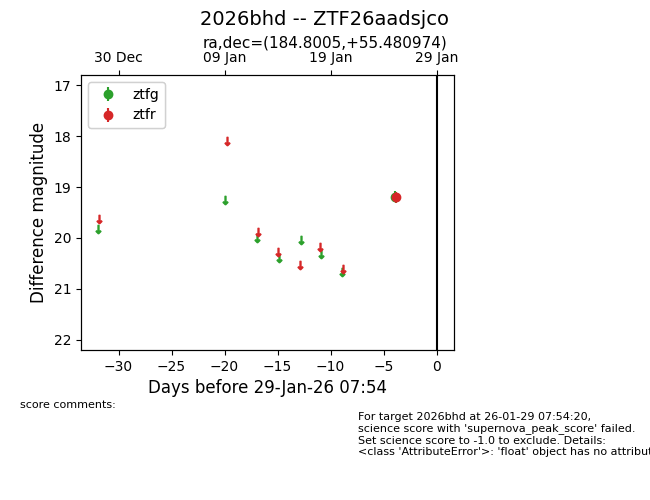
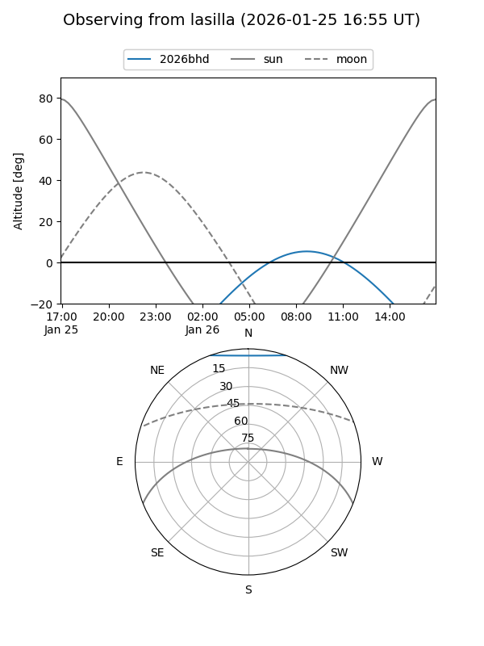
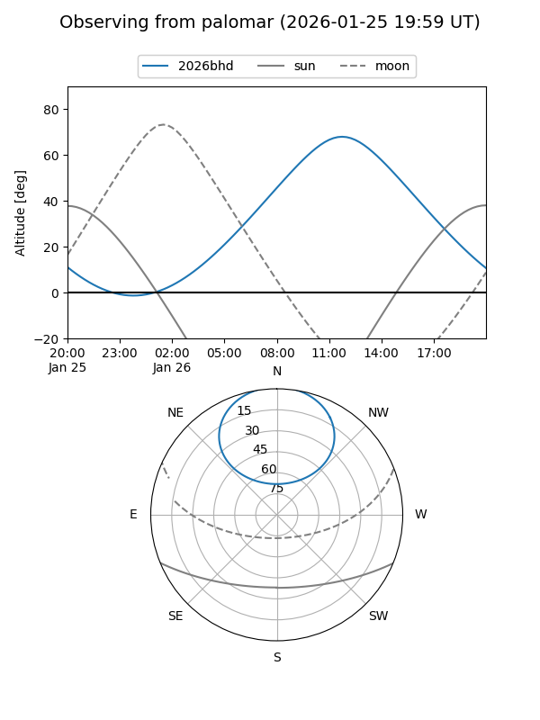

2026bhd
Target 2026bhd at 2026-01-26 15:06
Aliases and brokers:
FINK: link
Lasair: link
ALeRCE: link
TNS: link
YSE: link
alt names
ZTF26aadsjco (ztf,fink_ztf)
2026bhd (tns,yse)
Coordinates:
equatorial (ra, dec) = 184.8005,+55.48097
equatorial (HMS+DMS) = 12:19:12.12,+55:28:51.51
galactic (l, b) = (132.3790,+61.05208)
Flags:
Photometry:
last ztfr=19.20
1 ztfr detections
Lightcurve

Visibility


Additional plots